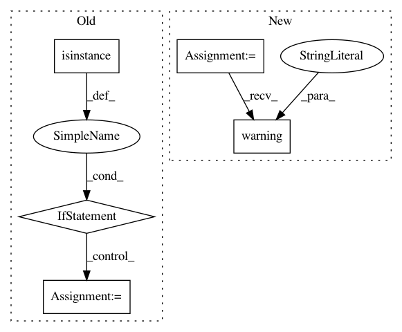

e0468f8b8e8667f05888a1ed218440d3ee2b9d31,homeassistant/__init__.py,StateMachine,track_change,#StateMachine#Any#Any#Any#Any#,678
Before Change
to_state = _process_match_param(to_state)
// Ensure it is a lowercase list with entity ids we want to match on
if isinstance(entity_ids, str):
entity_ids = (entity_ids.lower(),)
else:
entity_ids = tuple(entity_id.lower() for entity_id in entity_ids)
@ft.wraps(action)
def state_listener(event):
The listener that listens for specific state changes.
if event.data["entity_id"] not in entity_ids:
After Change
DEPRECATED
_LOGGER.warning(
"hass.states.track_change is deprecated. "
"Use homeassistant.helpers.event.track_state_change instead.")
import homeassistant.helpers.event as helper
helper.track_state_change(_MockHA(self._bus), entity_ids, action,
from_state, to_state)
In pattern: SUPERPATTERN
Frequency: 5
Non-data size: 5
Instances
Project Name: home-assistant/home-assistant
Commit Name: e0468f8b8e8667f05888a1ed218440d3ee2b9d31
Time: 2015-07-26
Author: paulus@paulusschoutsen.nl
File Name: homeassistant/__init__.py
Class Name: StateMachine
Method Name: track_change
Project Name: SpiNNakerManchester/sPyNNaker
Commit Name: c45ebbc75e6fc0dca009d95e1b64e98672b91a0f
Time: 2021-01-14
Author: donal.k.fellows@manchester.ac.uk
File Name: spynnaker8/models/connectors/from_file.py
Class Name: FromFileConnector
Method Name: __init__
Project Name: pfnet/optuna
Commit Name: 35d9988b7584db6d481c30116d37f5f89bf443a2
Time: 2019-09-19
Author: suehiro619@gmail.com
File Name: optuna/visualization.py
Class Name:
Method Name: _get_optimization_history_plot
Project Name: Microsoft/nni
Commit Name: e6ef08f367e0389e811d63eaa5afb16183a19e2b
Time: 2020-08-24
Author: 40699903+liuzhe-lz@users.noreply.github.com
File Name: src/sdk/pynni/nni/compression/tensorflow/compressor.py
Class Name:
Method Name: _locate_layers
Project Name: home-assistant/home-assistant
Commit Name: 5835d502c7dd3f1e86012bd3bf2edd80eda2f1c8
Time: 2014-11-30
Author: Paulus@PaulusSchoutsen.nl
File Name: homeassistant/__init__.py
Class Name: HomeAssistant
Method Name: track_state_change